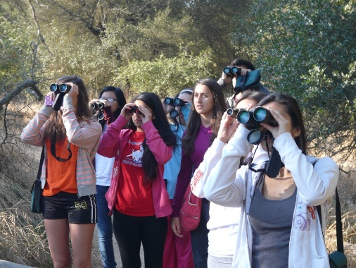
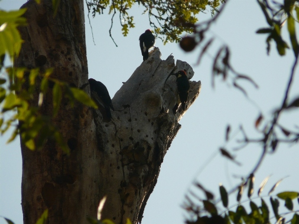
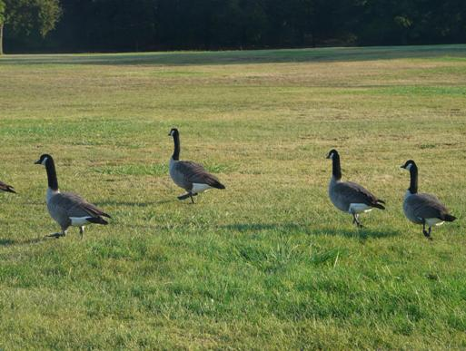
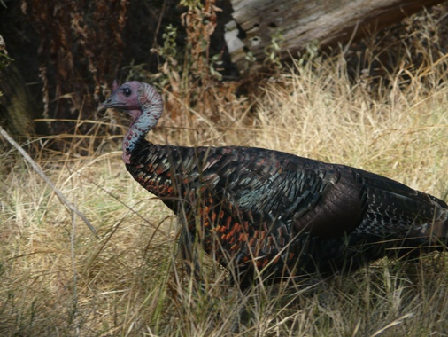
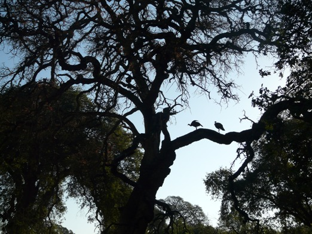
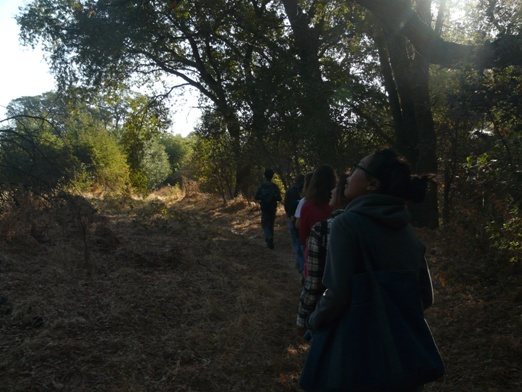
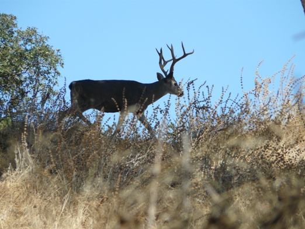

VERTEBRATE CENSUS
The Vertebrate Census Study determines the health of the creek by observing the changes in vertebrate populations throughout the seasons and years.
Vertebrates Students
Learning to identify European Starlings at the Effie Yeaw Nature Center.
Acorn-Woodpecker
A textbook Acorn-Woodpecker spotting.
Canadian Geese
Wild Turkey
Wild Turkeys
Perched high in the branches of a tree.
Vertebrates Students
Identifying birds on the first data outing of the year.
Mature Buck
Mammals aren't the primary focus of the study, but are fun to see.
The main task of the Vertebrates team is to recognize any trends of the inhabitants at the Arcade Creek that may require further attention. Although the study is responsible for observing all vertebrate animals, bird-watching is emphasized due to the relative abundance of birds at the creek.
The Vertebrates team collects written data by noting the species of vertebrates seen or heard, number of vertebrates in a group, and their distance from the creek, all of which are later used for analysis and comparison. Indicator species that are closely monitored include the Yellow-billed Magpie, California Quail, Mallard Duck, and Acorn Woodpecker. Their presence, absence, or relative well-being is reflective of the health of its ecosystem as a whole. Thorough accounts of the vertebrate species serve as a measure of the creek's health and indicate the ways to facilitate the improvement of its conditions.
STUDY FILES:
Vertebrates ProtocolVertebrates 2013 Fall Data
Vertebrates 2014 Spring Data